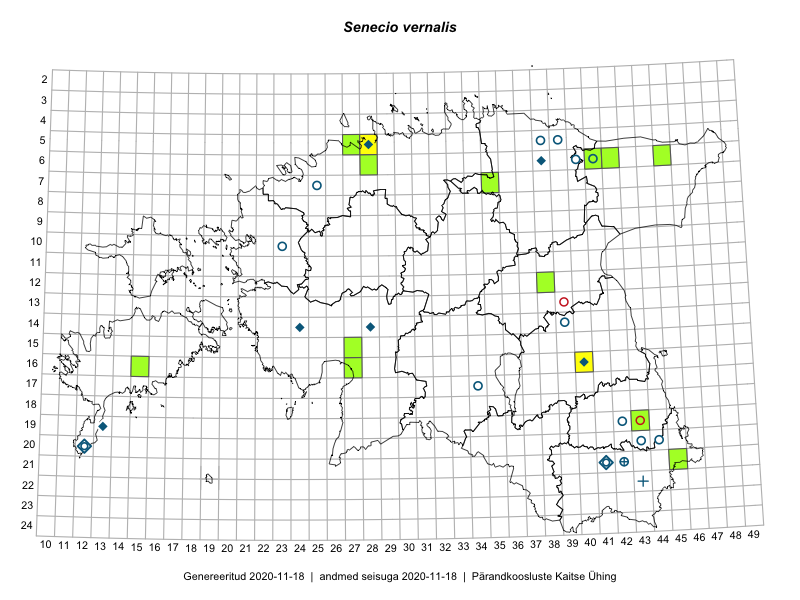

Senecio vernalis
Uuendatud: 2016-12-07
Kaardile koondatud taksonid: Senecio vernalis Waldst. & Kit.

Kaart põhineb 12 kirjel, neist vaatlusi 11 ja eksemplare 1. Taksonit on leitud 7 ruudust.
| Ruut | Vaatleja(d) | Vaatlusaeg | Kirje tüüp | Viide andmebaasikirjele |
|---|---|---|---|---|
| 06-42 | Peedu Saar, Sander Laherand | 2015-05-30 | ruut/ala | vaata PlutoFis |
| 06-41 | Peedu Saar, Sander Laherand | 2015-06-01 | ruut/ala | vaata PlutoFis |
| 06-41 | Toomas Kukk, Tiit Hallikma | 2015-07-24 | ruut/ala | vaata PlutoFis |
| 05-28 | Toomas Kukk | 2015-05-19 | ruut/ala | vaata PlutoFis |
| 06-45 | Thea Kull, Eerik Leibak | 2015-07-20 | ruut/ala | vaata PlutoFis |
| 06-45 | Thea Kull, Eerik Leibak | 2015-07-20 | punkt | vaata PlutoFis |
| 19-43 | Maret Gerz, Jaak-Albert Metsoja | 2015-05-20 | ruut/ala | vaata PlutoFis |
| 12-38 | Ulvi Selgis | 2016-05-20 | ruut/ala | vaata PlutoFis |
| 05-28 | Peedu Saar | 2016-06-01 | ruut/ala | vaata PlutoFis |
| 06-28 | Toomas Kukk | 2016-07-04 | ruut/ala | vaata PlutoFis |
| 19-43 | Jaak-Albert Metsoja, Maret Gerz | 2015-05-20 | punkt | vaata PlutoFis |
| 06-42 | Peedu Saar, S. Laherand | 2015-05-30 | eksemplar | vaata PlutoFis |